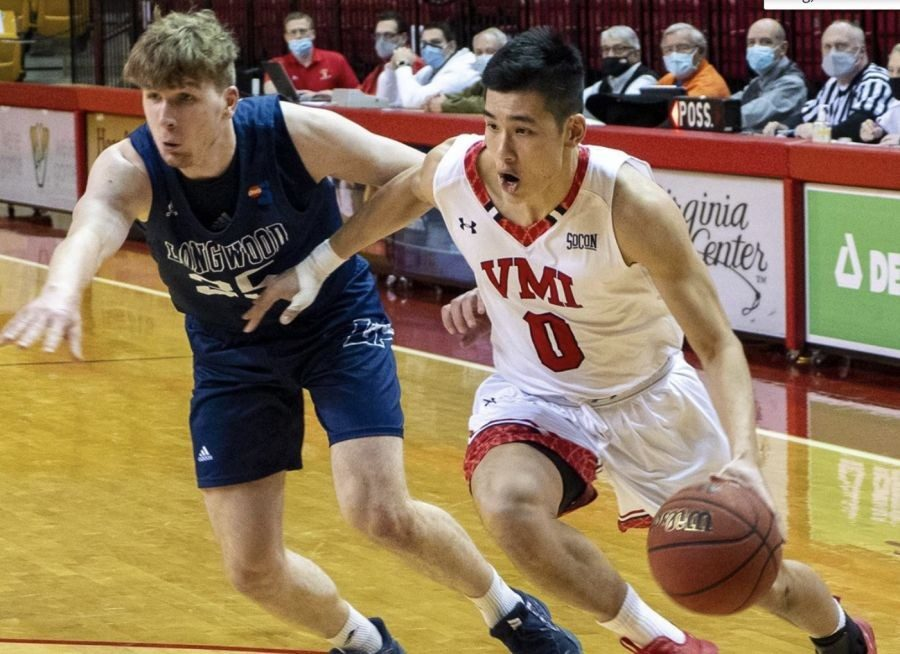
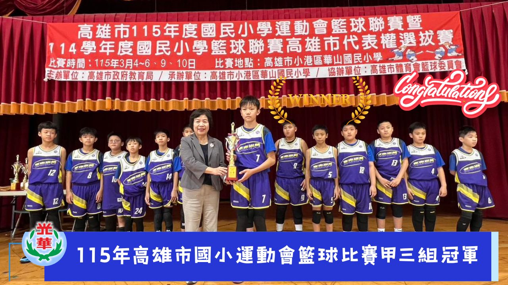
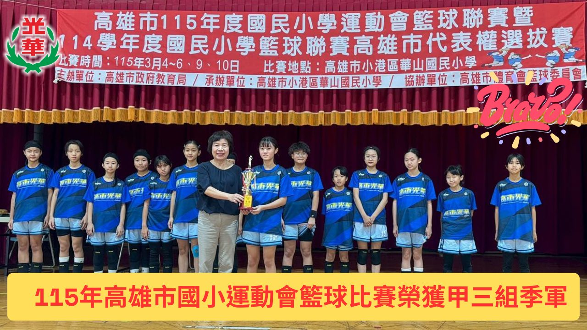
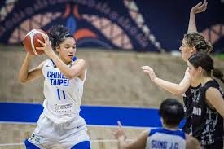

01我的故事
一、 關於我們：在港都培育籃壇新星
高雄市光華國小籃球隊多年來致力於基層籃球深耕，不僅訓練球員專業球技，更強調「品德第一、課業兼顧、球技精進」的教育理念。我們是一群熱愛籃球的孩子，在教練與學校的帶領下，每天清晨與課後在球場上揮灑汗水，用努力與毅力編織著籃球夢。
二、 榮耀時刻：努力與淚水的收穫
在剛結束的 115 年高雄市國小運動會 中，光華國小展現了強大的韌性與團隊默契，成績斐然：
男生組：榮獲甲三組 冠軍。
女生組：榮獲甲三組 季軍。
雙重肯定：男女籃雙雙取得「114 學年度全國小學籃球聯賽 (EBL)」的高雄市代表權。
三、光華國小籃球隊創立 20 餘年，一直是高雄在地培育籃球精英的重要基地。我們引以為傲的校友們，如今已在國內外籃球最高殿堂發光發熱，成為學弟妹們追隨的榜樣：
唐維傑：現為 高雄全家海神 職業籃球隊球員，曾赴美挑戰 NCAA D1 賽事，是光華培育出的指標性國手。
蕭豫玟：現為 國泰女籃 中鋒，曾代表台灣出賽 U19 世青賽，展現強大的內線統治力。
新生代新星：包括在 JHBL 、HBL、UBA中表現優異的等多位學長姊，都在各級聯賽持續為光華爭光。
四、 您的支持，將成為改變的力量
您的每一份捐贈，都將直接轉化為孩子們前進的動力。我們誠摯邀請社會各界企業與民眾，加入光華國小籃球隊的應援團，幫助這群熱愛籃球的小將，能在沒有後顧之憂的環境下，穿上戰靴，代表高雄市爭光，讓夢想在全國舞台上發光發熱。




推薦理由
光華籃球隊的孩子擁有最堅韌的鬥志，雖然多數球員來自基層家庭，但在刻苦的訓練環境中，始終保持全國頂尖的競爭力，參賽經費與裝備耗損是我們最大的挑戰。我們誠摯推薦這支充滿潛力的隊伍，您的每一份支持，都將直接轉化為孩子腳下的戰靴與出征的車票，讓孩子們的努力不因資源匱乏而受限。